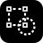

A placeholder that said nothing
Iconic shipped with a quick blue triangle and dot on a dark tile. It filled the slot but said nothing about the app. My brief was one line: black and white, a circle and a square, dotted like they're being edited. That's the moment Iconic lives in, a shape selected and mid-change.
Fifteen versions in twenty minutes
I designed it the same way I built the app: in conversation with Claude. I gave short directions, Claude edited the SVG by hand, checked it in a browser, and shipped each version to the live app.
- Short calls, fast loops. Directions like "solid circle", "right angles" and "centered" each became a live version within a minute.
- Every version is a commit. All fifteen are in the app's history, so the morph above uses the real files.
- Compare before choosing. For the bigger choices I asked for side-by-sides at real sizes, from 16 to 128px, on light and dark.
Start literal, then take things away
The first draft was a dashed square and a dashed circle with selection handles on the corners, exactly as asked. It read as "editing", but too busy. I took it apart one call at a time:
- Solid circle. One shape finished, one still being edited.
- No handles. The dashes alone say "selected".
- Thinner dashes, right-angle corners. Round dots looked soft. Sharp L-shaped corners look like a selection box.
- Corners lead. Corner arms longer than the dashes between them, so the square holds its shape. That meant drawing each piece by hand, since a repeating dash pattern can't vary lengths.

Equal by eye, not by numbers
v1 is about details you feel more than see.
- Reverse on overlap. Where the square passes under the circle, its dashes turn black, so the whole square still reads.
- Optically equal. A circle looks smaller than a square of the same width, so the circle grew until they matched by eye.
- No two-tone dashes. I moved the circle so its edge crosses the square in the middle of a gap, and every dash is all white or all black.
- Safe on every phone. The mark sits at 86% so Android's circle crop only trims background.
16 pixels tells the truth
v1 looked right on a home screen and fell apart in a browser tab. At 16px a thin dash is less than a pixel, so it blurs to grey.
- A separate small icon. A bolder tab icon that fills the tile, with thicker dashes and fewer of them.
- Drop what can't be seen. The reversed corner was one blurry pixel, so it went.
- Then drop the dashes. They still read as noise, so the square became solid grey under a white circle. That became v2, at every size.
Trying depth and color
With the shape settled, I asked whether a shadow or a gradient would make it pop.
- Shadows didn't make it. They only showed at large sizes, and my own site has a no-shadows rule. Flat fits the brand.
- No 45° angles. Diagonal gradients and shadows felt dated, so everything runs straight across, like my site header.
- All four colors was too much. My header gradient (teal, blue, peach, coral) works because it slides and you only see two at a time. Packed into one icon it got busy.
- No animated tab icon. Chrome, Edge and Safari only show the first frame, so it stays still.
The warm end of my signature
The version I loved was a moment from the animated header: dark orange fading to light orange. v3 uses just that, coral to peach, with a faded white square and a white circle. It ties Iconic to my site and documents without the noise of all four colors.
The black-and-white v2 stays as the lo-fi logo, and it's the mark in Iconic's toolbar, where it sits on the dark bar without a tile.
What changed since launch
The logo launched as v3. Along the way, several ideas went in and came back out.
Tried and taken back out
- Selection handles on the square's corners.
- Round dots and a rounded square.
- A black gap ring around the circle, replaced by reversed dashes.
- Dashes and the reversed corner at small sizes.
- Drop shadows, long shadows and 45° gradients.
Things to improve
- PNG icons for iPhone. iOS ignores SVG home-screen icons, so Iconic needs a 180px PNG to show v3 there.
- A full-bleed Android icon. One icon file serves both normal and cropped use today. A separate square-edged version would let Android shape it cleanly.
- The faded square at 16px. Half-white on peach is the weakest contrast in the mark. Worth testing a slightly stronger square in the tab icon.
- A moment of motion. The header-style gradient could play once when Iconic opens, and then settle.
Available for work